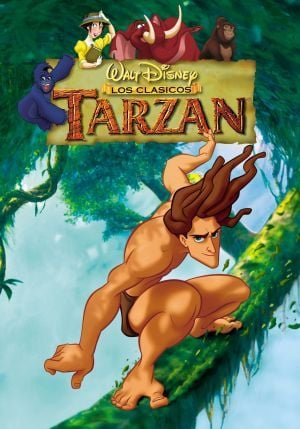

Tinker Bell (2008)
⭐⭐⭐⭐⭐
Uma fada descobre seu talento especial no mundo mágico.
⭐⭐⭐⭐⭐
Uma fada descobre seu talento especial no mundo mágico.

⭐⭐⭐⭐⭐
Um garoto descobre que é um bruxo e entra em Hogwarts.

⭐⭐⭐⭐☆
Um jovem descobre um lugar cheio de crianças com poderes especiais.

⭐⭐⭐☆☆
Os investigadores paranormais Ed e Lorraine ajudam uma família atormentada.

⭐⭐⭐☆☆
Uma investigação sombria leva uma equipe a uma casa cheia de segredos.

⭐⭐⭐⭐⭐
Um jovem herói atravessa universos para salvar sua realidade.
⭐⭐⭐☆☆
Lançado em 2002 e dirigido por Adam Shankman, o longa-metragem é uma adaptação do romance homônimo de Nicholas Sparks.

⭐⭐⭐☆☆
Um bebê órfão é criado por uma família de gorilas e acaba sendo aceito como um deles.

⭐⭐⭐⭐⭐
Uma fada descobre seu talento especial no mundo mágico.

⭐⭐⭐⭐⭐
Castanha é um macaco prego liberado na Floresta Amazônica.